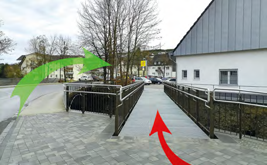

Übers Wasser oder Überflüssig

Weil der Gehweg, der an der Straßenbrücke über die Essel, mit 1,75 Meter Breite nur eingeschränkt barrierefrei genutzt werden kann, wenn sich Fußgänger begegnen, solle eine neue Fußgängerbrücke über die Essel gebaut werden.
Diese Brücke hat eine Breite von 2 Meter, also nur
25 Zentimeter breiter als der vorhandene Gehweg.
Die Kosten der Brücke belaufen sich dabei auf 95.000 Euro.
Davon zahlt die Gemeinde Eslohe 38.000 Euro, der Rest kommt aus Städtebaumitteln des Bundes und Landes.
Aufgrund der Stahlbauweise der Brücke können zukünftige Unterhaltungslasten minimiert werden.